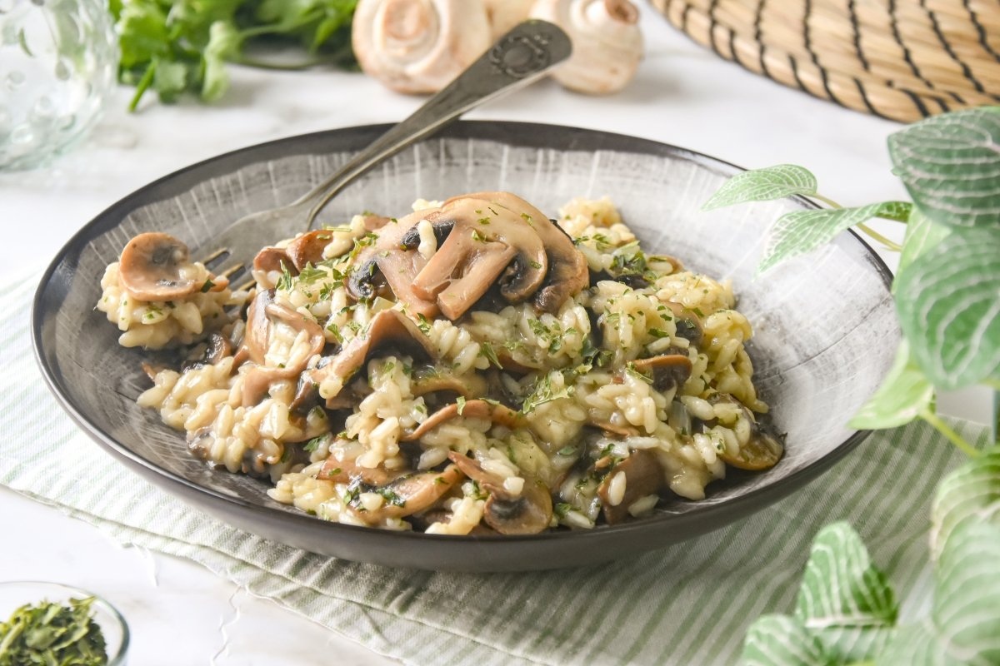

Risotto

Descripcion Risotto
Es una comida tradicional italiana que se realiza añadiendo gradualmente un caldo al arroz, junto con otros ingredientes que varían según las específicas recetas de risottos. Es uno de los modos más comunes de cocinar arroz en Italia. Es una comida originaria de la zona noroeste del país, concretamente del este de Piamonte, de Lombardía y de la zona de Verona, debido a la abundancia de arroz de estas regiones. Es uno de los pilares de la gastronomía norteña en general. El queso (usualmente parmesano) suele configurar habitualmente una de las señas características del plato.
INGREDIENTES
- 1 cucharada de aceite de oliva o mantequilla
- 1 cebolla mediana finamente cortada en cubitos
- 1½ taza de arroz Arborio
- 4 tazas de caldo pollo o verduras
- 1 cucharada de mantequilla dulce (opcional)
- 3 cucharadas de queso parmesano recién rallado + extra para servir
Pasos ¡A COCINAR!
- Coloque el caldo a ebullición sobre una llama alta. Gire la llama hacia abajo y deje a un lado en la parte posterior de la estufa.
- En un wok o horno holandés, calentar el aceite de oliva a fuego medio-alto. Añadir las cebollas y saltear hasta que sean suaves y transparentes pero sin color unos 5 minutos. Agregue el arroz y cocine hasta que los granos se vuelvan transparentes en los bordes, aproximadamente 1 minuto.
- Añada un cucharón de caldo al arroz y cocine agitando hasta que haya sido absorbido. Continúe agregando el caldo, 1 cucharón a la vez, revolviendo todo el tiempo hasta que el arroz esté al dente y cremoso, alrededor de 15 a 20 minutos. Reserve la última cucharada. Agregue las verduras crudas, por ejemplo, espárragos, cuando el caldo esté casi evaporado o con el segundo al último cucharón si está cocido o congelado.
- Torne el calor abajo a medio-bajo y arroje en el queso de parmesano, la mantequilla (si la esta usando) y el último cucharón de caldo. Retire del fuego, cubra y deje reposar durante 3-5 minutos. Sirva cubierto con queso parmesano extra rayado.
Volver al inicio